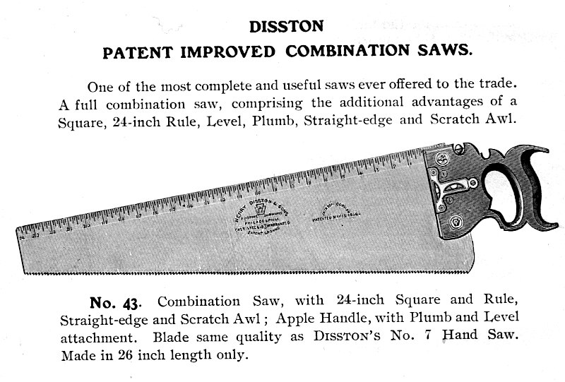
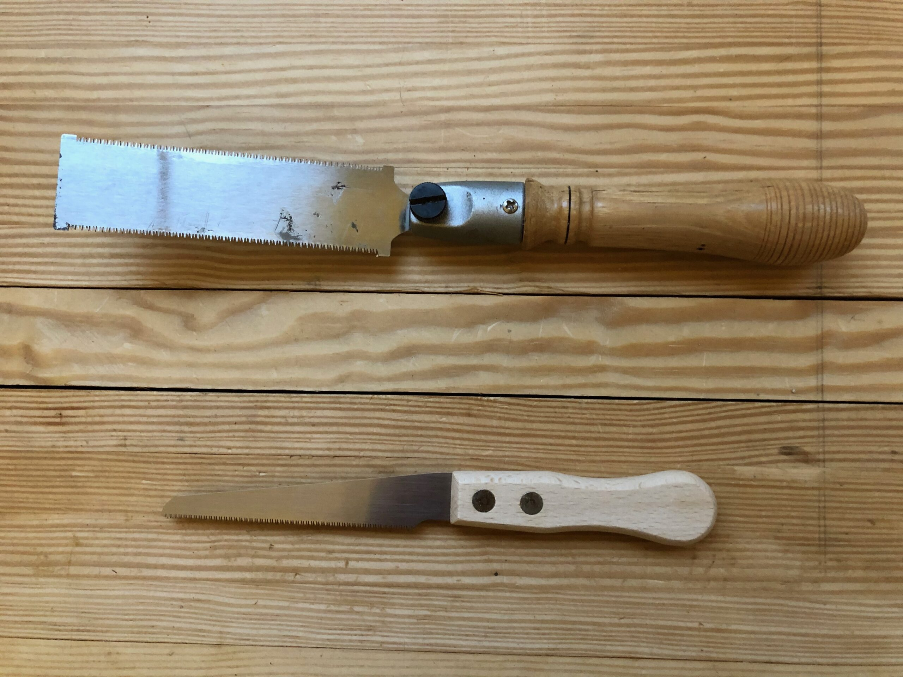
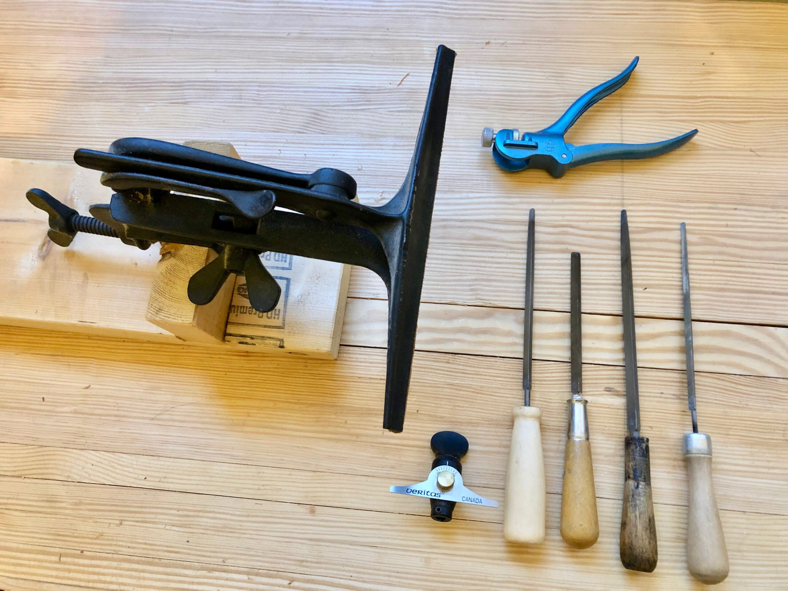

This week I’ll be talking saws. Besides the hammer and knife, the saw is one the oldest human-made tools. Saws come in such great diversity, with different shapes, sizes, type of cut, and tooth geometry. This will be a pretty long blog entry by necessity as I own quite a few different types of saws and they all deserve a explanation of use and a bit of history. I’ll be presenting my saws to you, explaining what I use them for and where I got them (if I can remember). Like other tools I own, my saws cover only a fraction of the saw types available. I tend to use the sharpest and fastest cutting saws of any particular type. Saws are only useful when they’re sharp. I’m not the best saw sharpener, but I do ok. I’d rather be cutting wood than sharpening saws. Rip saws are pretty easy to sharpen, but crosscut saws are a bit more of an art than science. Don’t get me wrong, there’s plenty of science in saw geometry, but the actual sharpening is a lot more of a learned skill. Even so, it is one that is best learned if you plan to do any hand sawing of your work. I will include my saw sharpening tools in addition to my saws in this entry. So let’s get started.

Coping Saws
My newest acquisition is the Knew Concepts Coping Saw. Let me first say, I have a love-hate relationship with coping saws. I love how small, easy to wield and how quickly they cut and the fact you don’t need to sharpen them, you just replace the blade (they come in various size teeth for different applications). I do not like that they are fickle wondering beasts and impossible to tighten. That was until I got the Knew Concepts saw. These things are impressive. They tighten down to a crazy high tension and cut like butter. Let’s just say I’ve removed the hate part of the this equation. Some of the positive attributes of the Knew Concepts saw: 1) Easy to load and unload the blades; 2) Easy to adjust blade rotation (not so on other designs); 3) Tightens the blade quickly; 4) Lightweight, and 5) The build quality is second to none. They are a bit pricey, but worth every penny. They are great for smaller jobs like cleaning out waste between dovetail tails and intricate scroll work in thinner material.

Turning Saw
This saw is very similar to the Coping Saw but it does heavier work with its longer and thicker blade. If I need to do a lot of scroll work through thicker material I use the Turning Saw. This is a saw that I made from Gramercy Kit from Tools for Working Wood Turning Saw Parts (Pins and Blades). I used hickory for the frame, walnut for the tension adjuster and maple for the handles. I followed the plans provided by TFWW. One thing you may see on the handles I turned for this saw and tool handles I’ve made in general is the three adjacent lines (i do it more now than on my earlier turnings.) This is one way to show folks that I have made the turned part. If you have one of these saws, please un-tighten it after use so you do not weaken the wood.
Sawing is definitely a skill you can learn in a few minutes and spend a lifetime perfecting.

Panel Saws
The two saws here are new from Lie-Nielsen. They are the Rip Cut 7ppi and the Crosscut 12ppi. There is nothing wrong with the antique saws I own, but I love the way the Lie-Nielsen saws cut and these are my day-to-day panel saws. One warning though, they only cut as good as you do, so you may have issues cutting straight lines, but after practice sawing a dozen or more feet of board with these, you’ll be cutting like a pro. I spent a lot of time perfecting my cutting abilities and still screw up some times. Just allow plenty of adjustment space on your cuts (especially at first) and you’ll be fine.

Dovetail Saws
I love dovetail saws. There is something about the way they cut so precisely and quickly. I have two (three if you count the Veritas Crosscut Saw) dovetail saws. The top saw is one is a saw I made at Roy Underhill’s Woodwright School with Tom Callisto. It has 14tpi and has such a thin blade, I can’t even get my thin Blue Spruce marking knife in it’s kerf (I have to use my box cutter knife to mark dovetails in it’s kerf). But it’s a pleasure to use and beautiful to boot. The second saw is a Veritas Dovetail Saw 20tpi, that I bought in 2011 and I absolutely love this saw. It makes great dovetail cuts and is comfortable in the hand. The third saw is also a Veritas saw but it is filed Crosscut with 16tpi. It’s very nice to use for smaller precision crosscut pieces and makes a very clean cut. I got this from a friend and will treasure it always.

Tenon Saws
This saw is easy to sharpen and great to use. It does not see a lot of use in my shop, but it does get used. This saw is one I made on my own. I purchased the saw plate, nuts, handle blank and saw back from Tom Callisto. I shaped the handle and punched the holes in the blade and fitted the back. This saw has a beech handle and filed rip at 12tpi. It cuts great, but not so much in crosscut, but it’s not really designed for that.

Carcase Saws
The two of these are nice vintage crosscut Carcase Saws. The first one was made by Simons and has 12tpi 12″ blade and cuts quickly and easily. The second saw is a nice Disston filed 16tpi with a 14″ blade. Both of these saw are fine examples of excellent vintage saw quality and craftsmanship. The steel is perfect and the handles fit human hands. I use both of these saws almost daily and I would not part with them for even really good money. I bought both of these saws at a Mid-West Tools Collectors Association or MWTCA Tool Meet in 2013. I do not remember exactly how much I paid for them, but it was about $80 and $60 respectively.

Flush Trim Saws
Used to trim flush. The first one is a cheap box store saw with a handle I turned (this was one of my first turning projects and I’ll probably turn a new one (with the three lines 🙂 ) to get rid of the plastic junk that came with it. The second saw is a Japanese Single Edge Flush-Cut Saw I recently purchased from Lee Valley to put in my tool chest.

Keyhole Saw
I don’t use it much, but when I need it, it’s very nice to have. This is a vintage saw that I got from a CraigsList purchase in 2013. The finish on the saw handle was in terrible condition and I just scraped of the old finish and put several coats of good ol’ Boiled Linseed Oil or BLO on it.

Saw Restoration
I’d like to take a minute to talk about saw restoration. I have purchased and acquired some vintage saws that were in a pretty sorry state, but had great potential. I don’t even consider restoration if the plate is deeply pitted or bent badly. I have an old and rare Disston and Morss #43 combination saw that I inherited from my father (if you haven’t guessed already, this is the saw in the first picture of the blog). It has A Straight Edge, Plum and Level Attachment, a Square, a Scratch Awe and Rule etched in the blade. I am in the process of restoring it to it’s former glory and I will reveal it in a future BLOG entry when done. It has a broken handle, a broken level vial and quite a bit a rust, but not too much, and is removable. I was able to salvage a replacement level vial glass the same size and the original from an old busted level. This should be a beautiful saw when I am through and I look forward to showing it in an upcoming blog.

Modern Saws
They have their place but I dislike the handles. I’d hate to see what the creature looks like, that had a hand that would fit these monstrosities. I mainly use these saws to cut stuff I’d never have my “good” saws cut. Like laminates and plywoods, etc. They do all my “dirty” work and I generally use gloves when using them…have I mentioned I don’t like the handles? The Craftsman pictured on top is about 35 years old and can be filed sharp again, so I’m contemplating making a decent handle for it. The Stanley is about 20 years old and has hardened teeth. When it gets dull, I’ll have a chunk of wood with a crappy design and soft tool steel only good for scrap use (not tool or scraper applications like the older saws). Nice features, right?

Vintage Panel Saws
I have been collecting panel saws for over a decade. I started looking in yard sales, estate sales, FreeCycle and Craigslist. I look for old saws with straight blades and brass saw nuts and handles shaped for the human hand, not like the modern saws with handles shaped by accountants (not to diss accountants, I know and love several, they’re just not really good at advising on manufacturing designs for tools used by humans).
Above are two saws I restored a few years ago. They are both Disstons; the top one is a course rip saw and the bottom one is a very fine crosscut saw. They work great and they’re very comfortable in the hand. I mainly use the my Lie-Nielsen Panel Saws, as I do not want to keep sharpening and therefore shortening the life of the vintage saws.

Saw Sharpening
Above is the kit for sharpening saws. It includes a Saw Vise, Saw Set (top), Veritas Saw File Holder, and various size triangular files. I bought the Saw Vise around 2012 at a MWTCA meet. I bought the Saw Set and Veritas File Holder from Lee Valley the same year. As you can see saw file handles art not a priority for me, l’ll probably turn a few in the future, who knows.
Well that’s all my saws. I hope you enjoyed seeing them and learning a little about them. Sawing is definitely a skill you can learn in a few minutes and spend a lifetime perfecting. There are a few tricks to sawing that makes it easer. I can cover these in a future blog entry if I get some requests for them. Until next time, keep making shavings and sawdust.
Peace,
Aaron